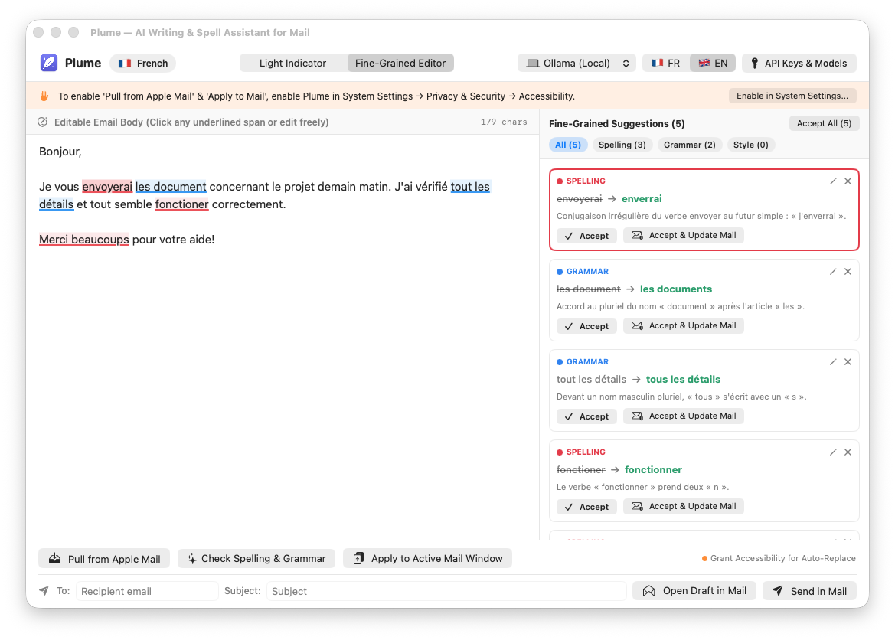
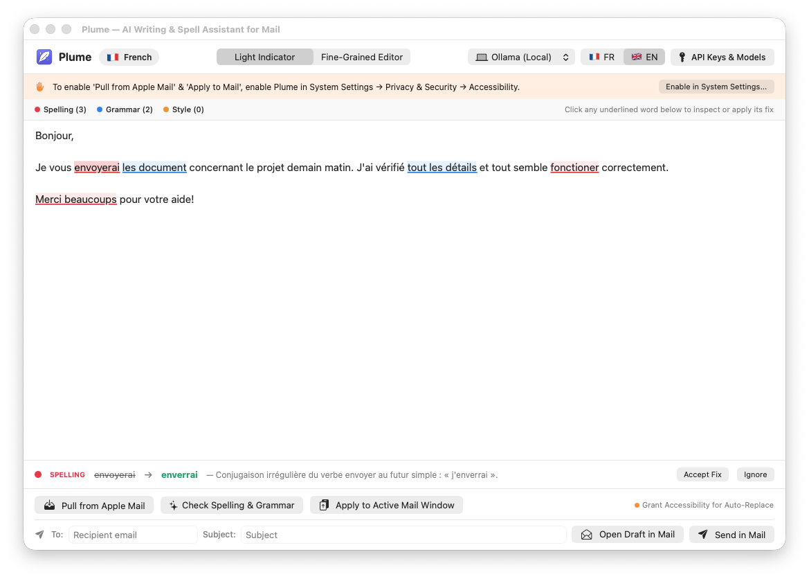

Plume est un assistant natif de correction orthographique, grammaticale et stylistique intégré à Apple Mail sur macOS. Utilisez vos propres clés API (Google Gemini, Claude, OpenAI, OpenRouter) ou un modèle 100 % local et gratuit via Ollama.
Plume is a native AI spell, grammar, and style checker integrated with Apple Mail on macOS. Bring Your Own API Key (Google Gemini, Claude, OpenAI, OpenRouter) or run 100% locally and privately with Ollama.
Deux modes d'affichage complémentaires pour réviser vos brouillons Apple Mail en un clin d'œil.

Éditeur complet à gauche et cartes de suggestions individuelles à droite (Accepter, Accepter & Maj Mail, Ignorer ou personnaliser au crayon).

Soulignements colorés par catégorie (Rouge = Orthographe, Bleu = Grammaire, Ambre = Style) avec barre d'inspection et correction rapide en un clic.
Two complementary editing modes to review and polish your Apple Mail drafts effortlessly.
Full editable draft on the left and individual suggestion cards on the right (Accept, Accept & Update Mail, Ignore, or customize inline).
Color-coded inline underlines (Red = Spelling, Blue = Grammar, Amber = Style) with a bottom quick-fix inspection bar.
Conçu en Swift & SwiftUI natif pour s'intégrer naturellement à votre flux de rédaction dans Apple Mail.
Compatible avec Google Gemini (gemini-3.8-flash), Anthropic Claude, OpenAI, OpenRouter ainsi qu'avec Ollama en local (ex: gemma4:latest) sans clé API ni abonnement.
Reconnaît automatiquement la langue dans laquelle vous rédigez votre e-mail (Français, Anglais, Espagnol, Allemand, Néerlandais, Italien…) et adapte ses explications.
Basculez entre le mode Indicateur léger (soulignements couleurs : Rouge = Orthographe, Bleu = Grammaire, Ambre = Style) et l'Éditeur détaillé pour accepter, ignorer ou modifier chaque correction individuellement.
Built natively with Swift & SwiftUI to fit seamlessly into your Apple Mail writing workflow.
Supports Google Gemini (gemini-3.8-flash), Anthropic Claude, OpenAI, OpenRouter, and 100% offline local models via Ollama (e.g. gemma4:latest) with zero API keys required.
Automatically detects the language of your draft (French, English, Spanish, German, Dutch, Italian…) and provides explanations in that same language.
Switch between Light Indicator Mode (color-coded inline underlines: Red = Spelling, Blue = Grammar, Amber = Style) and Fine-Grained Editor Mode to accept, ignore, or customize each fix one by one.
Guide pas-à-pas pour installer, configurer et utiliser Plume avec Apple Mail.
Plume-macOS.dmg et glissez Plume.app dans votre dossier /Applications.ollama pull gemma4:latest). Plume détecte automatiquement vos modèles locaux au démarrage.Step-by-step guide to installing, configuring, and using Plume with Apple Mail.
Plume-macOS.dmg and drag Plume.app into your /Applications folder.ollama pull gemma4:latest). Plume automatically detects your installed local models on startup.Plume est distribué sous forme de binaire universel notarié par Apple (compatible Apple Silicon & Intel).
| Version de macOS | Architecture (CPU) | Statut | Notes |
|---|---|---|---|
| macOS 26 (Tahoe) | Apple Silicon (M1–M4) & Intel | ✅ Pleinement supporté | Binaire universel natif (arm64 + x86_64) |
| macOS 15 (Sequoia) | Apple Silicon (M1–M4) & Intel | ✅ Pleinement supporté | Binaire universel natif (arm64 + x86_64) |
| macOS 14 (Sonoma) | Apple Silicon (M1–M4) & Intel | ✅ Pleinement supporté | Binaire universel natif (arm64 + x86_64) |
Plume is distributed as an Apple-notarized Universal Binary (supporting both Apple Silicon & Intel Macs).
| macOS Version | CPU Architecture | Status | Notes |
|---|---|---|---|
| macOS 26 (Tahoe) | Apple Silicon (M1–M4) & Intel | ✅ Fully Supported | Native Universal Binary (arm64 + x86_64) |
| macOS 15 (Sequoia) | Apple Silicon (M1–M4) & Intel | ✅ Fully Supported | Native Universal Binary (arm64 + x86_64) |
| macOS 14 (Sonoma) | Apple Silicon (M1–M4) & Intel | ✅ Fully Supported | Native Universal Binary (arm64 + x86_64) |